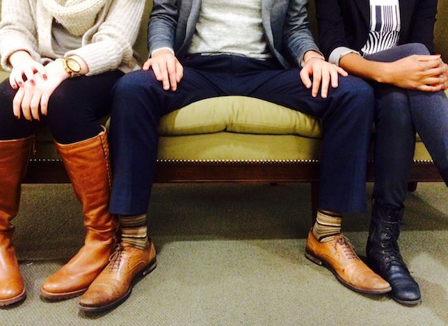
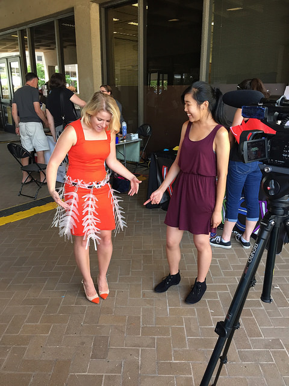

Read about the process
here.
SKRT is a critical design piece that fosters discussion about personal space, what it means for different cultures
and individuals and its definition as a physical or virtual space. This was a team class project in Critical Making at UC Berkeley (link ot class page) created in collaboration
with Andrew Fang, Brian C Ly, Sumer Mohammed, and Tessira Crawford. My main role was designing and building
the overall skirt structure and individual pieces.
SKRT team at end of the year Critical Making project expo
Problem
People just don't talk about personal space. It is an invisible yet ubiquitous force that we understand
as we observe a culture over time. For example, every time I take BART (Bay Area subway), I notice people
filling in every other seat, avoiding sitting right next to a stranger unless the subway is crowded.
In California, even sitting right next to someone you don't know seems like a violation of personal
space when the BART is not crowded.
The personal bubble concept is also attacked and exaggerated by different social expectations.
For example, feminists argue that women are constantly interrupted by a man’s physical
presence through the spreading of their legs ("manspreading"). This physical sign of
dominance, whether intentional or not, forces the woman into a smaller space.
Others add that personal space is decreasing outwardly but increasing inwardly. Personal space exists
internally because of the smartphone. These devices force users to not be aware of their
context and only focus on matters occurring privately within the palm of their hands.

Manspreading on public transit. Banned in NY as of January 2015.
Building the Final Iteration
Read about our building process, multiple iterations, and electronics of the project
here.
The final prototype consists of a belt and five leaves
made of up of acryllic pieces. I designed each piece in Illustrator, laser cut them, and then sanded them
for a frosted look that half shows and half hides the structure and electronics of SKRT.
I then heated each piece to bend them into the shape you see in the photos. My team and I
strung these pieces, along with
spacers, LED lights, fishing line, the electronics and wiring to create the final prototype.
SKRT concept model

Glimpse of the heating and bending process
Final Prototype
Our intention is to neither attack nor exaggerate the personal bubble. Instead, we created a physical
bubble that will not only define the wearer’s boundaries but also intrude into others’.
Thus, we decided to create a skirt composed of 5 “leaves” that curl outwards towards any sign of movement,
Using motors, sensors, carbon fiber, and lights, we created something that critiqued the personal bubble.
We did not design this object to resolve an issue or to perpetuate one but to merely exist. And in its
existence encourages people to talk about it and personal space.
Below are some photos of the final prototype of SKRT which show various details. Photo credits to our team
member and amazing photographer Brian C Ly.
Final prototype of SKRT leaves the lab
Closeup of the five "leaves" and belt

Servo motor that pulls the fishing line up to make each leaf "curl"
Detail of each beautifully frosted clear acryllic piece
Final prototype promo video
Featured
I had the honor of representing my team in presenting SKRT at Bay Area Maker Faire in San Mateo, CA (May 2015) and National Maker Faire
in Washington D.C. (June 2015). SKRT was awarded
Editor's Choice at the Bay Area Maker Faire.
and featured in the local Washington D.C.
news, gray.tv.
Check out photos of SKRT unveiled to the public!
Team member Sumer rocks SKRT at Critical Making class expo

Gray.tv reporter tries on SKRT and interviews me about the SKRT story at National Maker Faire
People are super intrigued! Here you can see the batteries and circuit board I have in the back
Demoing SKRT to curious passerbys at National Maker Faire
With other UC Berkeley project Skintillates (LED light up tatoos) at National Maker Faire
National Maker Faire photographer Kevin Jarrett takes a shot of SKRT
News video on Fashion Tech featuring SKRT produced by Atia Musazay
graduate student at UC Berkeley School of Journalism
Lessons Learned
I learned a lot about digital prototyping through SKRT as well as the Critical Making class.
I had no experience with circuitry, laser cutting, 3D modeling before the class but through
these projects gained valuable hands-on experience with these tools. Applying the
design process to a relatively new realm of digital-physical products such as the wearable, SKRT,
gave me new perspectives through both the medium and team I worked with. This project enabled me
to really think outside of the box, to think beyond what "wearables" meant, to be creative, to collaborate,
and to tell a story with something physical and moving, a skirt that seemed almost alive. I worked through the design process and building of a product in depth, from ideation to more than five
iterations, to a high fidelity
prototype.
SKRT gives me a fresh view at purely digital interfaces like the smartphone apps and websites I
often design. Thank you to my amazing team. We started off rocky coming from
very different backgrounds of Electrical Engineering, Computer Science, Business, Architecture, and myself,
Cognitive Science, but we learned to balance technical aspects and human factors.
Special thanks to my instructor Eric Paulos and lab manager Chris Myers for opening my eyes to technologies
I am beginning to imagine.
Read about the process
here.